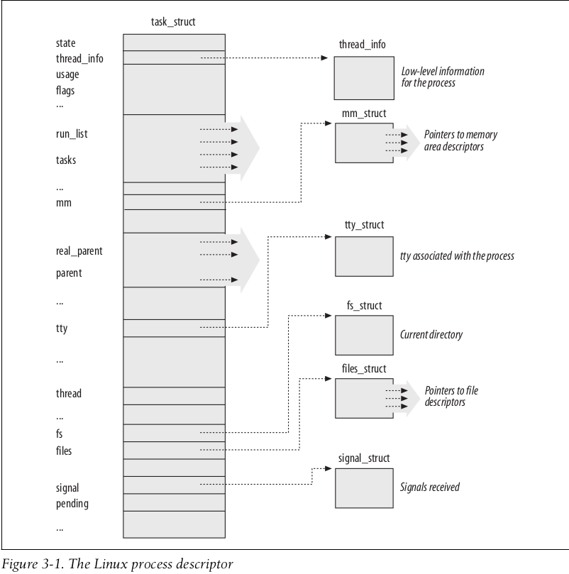
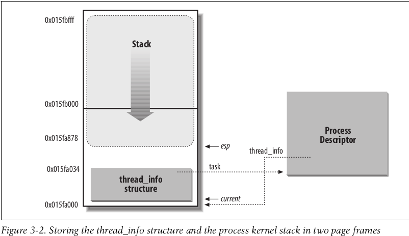
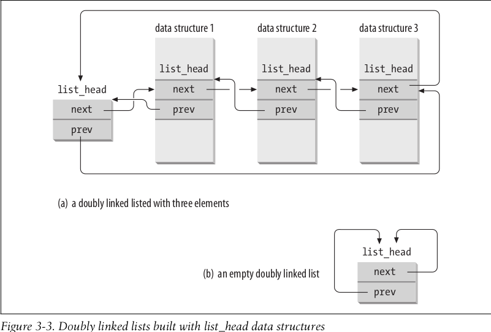
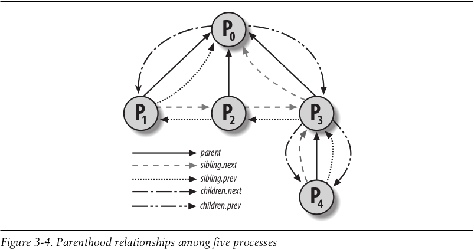
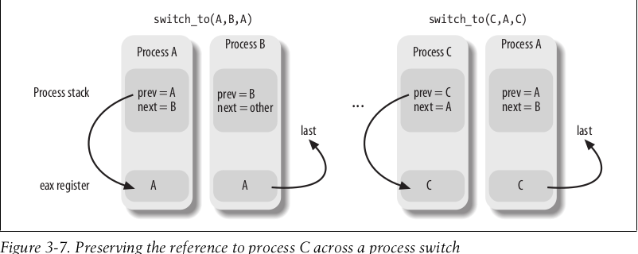

linux内核学习-五
前言
本篇博客介绍一下Linux的进程相关内容
进程描述符
一个进程描述符应当包含进程相关的所有信息，所以其结构会非常复杂。
struct task_struct
Linux内核使用位于include/linux/sched.h的相关结构体，来管理进程信息。其相关的重要字段如下所示
| 类型 | 字段名称 | 描述 |
|---|---|---|
| struct thread_info | thread_info | 包含不同架构下，进程所需的PCB块信息 |
| unsigned int | __state | 当前进程的状态 |
| void * | stack | 进程的内核态栈——当进程陷入内核态时，使用的栈结构 |
| struct list_head | tasks | 用于管理系统中所有进程的双向链表 |
| struct mm_struct * | mm | 当前进程的虚拟地址空间 |
| pid_t | pid | 进程唯一标识符 |
| pid_t | tgid | 进程所属的进程组领头线程的进程唯一标识符 |
| struct fs_struct* | fs | 进程的文件信息，诸如根目录、当前工作目录等 |
| struct files_struct * | files | 进程的打开文件信息 |
| struct signal_struct * | signal | 进程所接受的信号信息 |
其整体结构如下图所示

内核栈
若进程本身就是内核进程，或从用户态陷入内核态，此时其需要使用位于内核数据段的栈。
在Linux中，进程对应的内核栈的内存布局如下所示

内核会将进程描述符的thread_info字段和stack字段对应的数据结构，共同分配在起始地址对齐$2^{13}$的，两个连续的页框上。
这样子，可以通过计算$rsp \& 0xffffffffffffe000$，即可找到该进程对应的thread_info字段，从而获取进程描述符的地址
进程链表
Linux内核使用位于scripts/kconfig/list.h的相关结构体，管理双向链表结构，如下图所示

Linux内核中提供了相关的宏来操作该双向链表结构，几个重要的处理函数如下所示
| 名称 | 说明 |
|---|---|
| list_add(n, p) | 将n指向的元素插入p所指向的特定元素之后 |
| list_add_tail(n, p) | 将n指向的元素插入p所指向的特定元素之前 |
| list_del(p) | 删除p所指向的元素 |
| list_entry(p, t, m) | 现有t类型变量的m字段的地址p，返回该变量的地址 |
| list_for_each(p, h) | 对表头地址h指定的链表进行扫描，通过p返回指向链表元素的list_head结构指针 |
| list_for_each_entry(p, h, m) | 与list_for_each类似，但是返回的是包含链表元素的数据结构的地址 |
Linux内核使用进程描述符的list_head类型的tasks字段，将所有的进程的进程描述符连接在一个双向链表中管理。
进程关系
亲属关系
程序创建的进程具有父/子关系，可能还有兄弟关系。Linux内核在进程描述符中引入相关的字段来表示这些关系，下面表示给定进程p的相关关系样例
| 字段名 | 说明 |
|---|---|
| real_parent | 指向创建了p进程的进程描述符。如果上述进程已经不存在，则指向进程1(init)的进程描述符 |
| parent | 指向p的当前父进程(该进程的子进程终止时，需要向父进程发送相关信号) |
| children | p进程创建的子进程双向链表 |
| sibling | 指向兄弟进程链表的其他元素，这些兄弟进程的父进程是相同的进程 |
下面是进程$P0$创建了进程$P1$、$P2$、$P3$，而进程$P3$又创建了进程$P4$，其关系如下所示

非亲属关系
当然，程序中还存在其他关系，诸如领头进程等。Linux内核在进程描述符中引入相关的字段来表示这些关系，下面表示给定进程p的相关关系样例
| 字段名 | 说明 |
|---|---|
| group_leader | p所在进程组的领头进程的描述符 |
| tgid | p所在线程组的领头进程的pid |
| ptraced | 所有被debugger程序追踪的p的子进程的双向链表 |
| ptrace_entry | 指向所追踪进程其实际父进程链表的前一个和下一个元素 |
进程切换
为了控制进程的执行，内核必须有能力挂起正在CPU上运行的进程，并恢复以前挂起的某个进程的执行
硬件上下文
尽管每个进程都可以拥有独立的进程空间，但所有的进程必须共享CPU寄存器。因此，在恢复一个进程的执行之前，内存必须确保每个寄存器装入了挂起进程时的值。
进程恢复执行前，必须装入寄存器的一组数据称为硬件上下文(hardware context)。在Linux中，进程硬件上下文的一部分存放在TSS段，而剩余部分存放在进程对应的内核态堆栈
在下面的描述中，假定用prev局部变量表示切换出的进程的描述符，next局部变量表示切换进的进程的描述符。这里需要注意的是，进程切换只发生在内核态，在执行进程切换之前，用户态进程使用的所有寄存器内容都已经被保存在内核堆栈上，也包括ss和rsp这对寄存器内容
任务状态段
实际上，在80x86体系结构上，有一个特殊的段类型，即任务状态段(Task State Segment)。
Linux会为系统中每个CPU创建一个TSS，并在其上保存CPU运行的进程的部分描述信息(如内核态堆栈地址)
当每次进程切换时，会从对应的TSS中获取prev的内核态堆栈地址，并且完成进程上下文的保存(即进程描述符的thread字段)；当切换完进程后，在更新当前CPU对应的TSS的相关字段
执行进程切换
一般来说，进程切换可能只发生在位于kernel/sched/core.c的asmlinkage __visible void __sched schedule(void)函数中
而本质上，每个进程切换由两步组成
- 切换页全局目录，从而安装一个新的地址空间
- 切换内核态堆栈和硬件上下文
switch_to宏
进程切换的第二部分由switch_to宏执行，其是内核中与硬件关系最紧密的部分之一。在80x86体系下，其执行位于arch/x86/include/asm/switch_to.h的switch_to(prev, next, last)函数
其汇编代码如下所示1
2
3
4
5
6
7
8
9
10
11
12
13
14
15
16
17
18
19
20
21
22
23
24
25
26
27
28
29
30
31
32
33
34
35
36
37
38
39
40/*
* Save callee-saved registers
* This must match the order in inactive_task_frame
*/
pushq %rbp
pushq %rbx
pushq %r12
pushq %r13
pushq %r14
pushq %r15
/* switch stack */
movq %rsp, TASK_threadsp(%rdi)
movq TASK_threadsp(%rsi), %rsp
#ifdef CONFIG_STACKPROTECTOR
movq TASK_stack_canary(%rsi), %rbx
movq %rbx, PER_CPU_VAR(fixed_percpu_data) + stack_canary_offset
#endif
#ifdef CONFIG_RETPOLINE
/*
* When switching from a shallower to a deeper call stack
* the RSB may either underflow or use entries populated
* with userspace addresses. On CPUs where those concerns
* exist, overwrite the RSB with entries which capture
* speculative execution to prevent attack.
*/
FILL_RETURN_BUFFER %r12, RSB_CLEAR_LOOPS, X86_FEATURE_RSB_CTXSW
#endif
/* restore callee-saved registers */
popq %r15
popq %r14
popq %r13
popq %r12
popq %rbx
popq %rbp
jmp __switch_to
总的来说，其基本思路就是保存需要保存的上下文，然后切换内核态堆栈，从而完成进程的切换。
这里需要特别说明一下的是，注意到其并未保存rdi和rsi寄存器，这是有原因的。如下图所示

可以看到，如果进程A被暂停后在重新激活，其另一个相关进程往往是不一样的，如图中最左侧和最后侧的显示。
最左侧是switch_to(A, B)，而最右侧是switch_to(C, A)。如果将rdi和rsi寄存器保存后再恢复，则重新激活后，其上下文是第一次冻结时的上下文，与实际情况大概率不相符。
__switch_to
注意到，在switch_to宏最后，其还调用位于arch/x86/kernel/process_64.c的__visible __notrace_funcgraph struct task_struct * __switch_to(struct task_struct *prev_p, struct task_struct *next_p)函数，用来保存和更新前面介绍的CPU上的TSS结构。其化简后的逻辑如下所示
1 | __visible __notrace_funcgraph struct task_struct * |
其基本思路就是保存和切换CPU的TSS相关的数据
创建进程
*nix系统紧紧依赖进程创建，来满足用户的需求
传统的Unix系统以统一的方式对待所有进程——即子进程复制父进程所拥有的所有资源。其往往速度非常慢，并且效率很低，子进程几乎不必读或修改父进程拥有的所有资源，甚至立即调用execve()函数，并清除父进程仔细拷贝过来的地址空间
linux内核通过引入如下几种不同的机制解决该问题
- 写时复制技术允许父子进程读相同的物理页。只要父子进程中的任何一个试图写，内核则将该物理页的内容拷贝到一个新的物理页，并且将这个新的物理页分配给正在写的进程
- 轻量级进程允许父子进程共享每进程在内核的很多数据结构，如页表、打开文件表以及信号处理等
- vfork系统调用创建的进程，能共享其父进程的内存地址空间。为了防止父进程重写子进程需要的数据，会阻塞父进程的执行，直到子进程退出或执行一个新的程序为止
kernel_clone
Linux内核使用位于kernel/fork.c的pid_t kernel_clone(struct kernel_clone_args *args)函数，为clone、fork和vfork等系统调用的实际服务例程。其化简后逻辑如下所示1
2
3
4
5
6
7
8
9
10
11
12
13
14
15
16
17
18
19
20
21
22
23
24
25
26
27
28
29
30
31
32
33
34
35
36
37
38
39
40
41
42
43
44
45
46pid_t kernel_clone(struct kernel_clone_args *args)
{
u64 clone_flags = args->flags;
struct completion vfork;
struct pid *pid;
struct task_struct *p;
int trace = 0;
pid_t nr;
/*
* Determine whether and which event to report to ptracer. When
* called from kernel_thread or CLONE_UNTRACED is explicitly
* requested, no event is reported; otherwise, report if the event
* for the type of forking is enabled.
*/
if (!(clone_flags & CLONE_UNTRACED)) {
if (clone_flags & CLONE_VFORK)
trace = PTRACE_EVENT_VFORK;
else if (args->exit_signal != SIGCHLD)
trace = PTRACE_EVENT_CLONE;
else
trace = PTRACE_EVENT_FORK;
if (likely(!ptrace_event_enabled(current, trace)))
trace = 0;
}
p = copy_process(NULL, trace, NUMA_NO_NODE, args);
pid = get_task_pid(p, PIDTYPE_PID);
nr = pid_vnr(pid);
wake_up_new_task(p);
/* forking complete and child started to run, tell ptracer */
if (unlikely(trace))
ptrace_event_pid(trace, pid);
if (clone_flags & CLONE_VFORK) {
if (!wait_for_vfork_done(p, &vfork))
ptrace_event_pid(PTRACE_EVENT_VFORK_DONE, pid);
}
put_pid(pid);
return nr;
}
其大体思路就是复制相关的进程描述符，插入到合适的调度队列中，并设置相关的追踪信号等
copy_process
Linux内核使用位于kernel/fork.c的static __latent_entropy struct task_struct *copy_process(struct pid *pid, int trace, int node, struct kernel_clone_args *args)，复制当前进程的进程描述符和其他资源数据结构，稍加修改来作为子进程的对应数据结构。其简化的逻辑结构如下所示1
2
3
4
5
6
7
8
9
10
11
12
13
14
15
16
17
18
19
20
21
22
23
24
25
26
27
28
29
30
31
32
33
34
35
36
37
38
39
40
41
42
43
44
45
46
47
48
49
50
51
52
53
54
55
56
57
58
59
60
61
62
63
64
65
66
67
68
69
70
71
72
73
74
75
76
77
78
79
80
81
82
83
84
85
86
87
88
89
90
91
92
93
94
95
96
97
98
99
100
101
102
103
104
105
106
107
108
109
110
111
112
113
114
115
116
117
118
119
120
121
122
123
124
125
126
127
128
129
130
131
132
133
134
135
136
137
138
139
140
141
142
143
144
145
146
147
148
149
150
151
152
153
154
155
156
157
158
159
160
161
162
163
164
165
166
167
168
169
170
171
172
173
174
175
176
177
178
179
180
181
182
183
184
185
186
187
188
189
190
191
192
193
194
195
196
197
198
199
200
201
202
203
204
205
206
207
208
209
210
211
212
213
214
215
216
217
218
219
220
221
222
223
224
225
226
227
228
229
230
231
232
233
234
235
236
237
238
239
240
241
242
243
244
245
246
247
248
249
250static __latent_entropy struct task_struct *copy_process(
struct pid *pid,
int trace,
int node,
struct kernel_clone_args *args)
{
/*
* Force any signals received before this point to be delivered
* before the fork happens. Collect up signals sent to multiple
* processes that happen during the fork and delay them so that
* they appear to happen after the fork.
*/
sigemptyset(&delayed.signal);
INIT_HLIST_NODE(&delayed.node);
spin_lock_irq(¤t->sighand->siglock);
recalc_sigpending();
spin_unlock_irq(¤t->sighand->siglock);
p = dup_task_struct(current, node);
if (args->io_thread) {
/*
* Mark us an IO worker, and block any signal that isn't
* fatal or STOP
*/
p->flags |= PF_IO_WORKER;
siginitsetinv(&p->blocked, sigmask(SIGKILL)|sigmask(SIGSTOP));
}
p->set_child_tid = (clone_flags & CLONE_CHILD_SETTID) ? args->child_tid : NULL;
/*
* Clear TID on mm_release()?
*/
p->clear_child_tid = (clone_flags & CLONE_CHILD_CLEARTID) ? args->child_tid : NULL;
lockdep_assert_irqs_enabled();
retval = copy_creds(p, clone_flags);
current->flags &= ~PF_NPROC_EXCEEDED;
delayacct_tsk_init(p); /* Must remain after dup_task_struct() */
p->flags &= ~(PF_SUPERPRIV | PF_WQ_WORKER | PF_IDLE | PF_NO_SETAFFINITY);
p->flags |= PF_FORKNOEXEC;
INIT_LIST_HEAD(&p->children);
INIT_LIST_HEAD(&p->sibling);
rcu_copy_process(p);
p->vfork_done = NULL;
spin_lock_init(&p->alloc_lock);
init_sigpending(&p->pending);
p->utime = p->stime = p->gtime = 0;
prev_cputime_init(&p->prev_cputime);
p->default_timer_slack_ns = current->timer_slack_ns;
task_io_accounting_init(&p->ioac);
acct_clear_integrals(p);
posix_cputimers_init(&p->posix_cputimers);
p->io_context = NULL;
audit_set_context(p, NULL);
cgroup_fork(p);
p->pagefault_disabled = 0;
/* Perform scheduler related setup. Assign this task to a CPU. */
retval = sched_fork(clone_flags, p);
retval = perf_event_init_task(p, clone_flags);
retval = audit_alloc(p);
/* copy all the process information */
shm_init_task(p);
retval = security_task_alloc(p, clone_flags);
retval = copy_semundo(clone_flags, p);
retval = copy_files(clone_flags, p);
retval = copy_fs(clone_flags, p);
retval = copy_sighand(clone_flags, p);
retval = copy_signal(clone_flags, p);
retval = copy_mm(clone_flags, p);
retval = copy_namespaces(clone_flags, p);
retval = copy_io(clone_flags, p);
retval = copy_thread(clone_flags, args->stack, args->stack_size, p, args->tls);
stackleak_task_init(p);
if (pid != &init_struct_pid) {
pid = alloc_pid(p->nsproxy->pid_ns_for_children, args->set_tid,
args->set_tid_size);
}
futex_init_task(p);
/*
* Syscall tracing and stepping should be turned off in the
* child regardless of CLONE_PTRACE.
*/
user_disable_single_step(p);
clear_task_syscall_work(p, SYSCALL_TRACE);
clear_tsk_latency_tracing(p);
/* ok, now we should be set up.. */
p->pid = pid_nr(pid);
if (clone_flags & CLONE_THREAD) {
p->group_leader = current->group_leader;
p->tgid = current->tgid;
} else {
p->group_leader = p;
p->tgid = p->pid;
}
p->nr_dirtied = 0;
p->nr_dirtied_pause = 128 >> (PAGE_SHIFT - 10);
p->dirty_paused_when = 0;
p->pdeath_signal = 0;
INIT_LIST_HEAD(&p->thread_group);
p->task_works = NULL;
clear_posix_cputimers_work(p);
/*
* Ensure that the cgroup subsystem policies allow the new process to be
* forked. It should be noted that the new process's css_set can be changed
* between here and cgroup_post_fork() if an organisation operation is in
* progress.
*/
retval = cgroup_can_fork(p, args);
/*
* Now that the cgroups are pinned, re-clone the parent cgroup and put
* the new task on the correct runqueue. All this *before* the task
* becomes visible.
*
* This isn't part of ->can_fork() because while the re-cloning is
* cgroup specific, it unconditionally needs to place the task on a
* runqueue.
*/
sched_cgroup_fork(p, args);
/*
* From this point on we must avoid any synchronous user-space
* communication until we take the tasklist-lock. In particular, we do
* not want user-space to be able to predict the process start-time by
* stalling fork(2) after we recorded the start_time but before it is
* visible to the system.
*/
p->start_time = ktime_get_ns();
p->start_boottime = ktime_get_boottime_ns();
/*
* Make it visible to the rest of the system, but dont wake it up yet.
* Need tasklist lock for parent etc handling!
*/
write_lock_irq(&tasklist_lock);
/* CLONE_PARENT re-uses the old parent */
if (clone_flags & (CLONE_PARENT|CLONE_THREAD)) {
p->real_parent = current->real_parent;
p->parent_exec_id = current->parent_exec_id;
if (clone_flags & CLONE_THREAD)
p->exit_signal = -1;
else
p->exit_signal = current->group_leader->exit_signal;
} else {
p->real_parent = current;
p->parent_exec_id = current->self_exec_id;
p->exit_signal = args->exit_signal;
}
klp_copy_process(p);
sched_core_fork(p);
spin_lock(¤t->sighand->siglock);
/*
* Copy seccomp details explicitly here, in case they were changed
* before holding sighand lock.
*/
copy_seccomp(p);
rseq_fork(p, clone_flags);
init_task_pid_links(p);
if (likely(p->pid)) {
ptrace_init_task(p, (clone_flags & CLONE_PTRACE) || trace);
init_task_pid(p, PIDTYPE_PID, pid);
if (thread_group_leader(p)) {
init_task_pid(p, PIDTYPE_TGID, pid);
init_task_pid(p, PIDTYPE_PGID, task_pgrp(current));
init_task_pid(p, PIDTYPE_SID, task_session(current));
if (is_child_reaper(pid)) {
ns_of_pid(pid)->child_reaper = p;
p->signal->flags |= SIGNAL_UNKILLABLE;
}
p->signal->shared_pending.signal = delayed.signal;
p->signal->tty = tty_kref_get(current->signal->tty);
/*
* Inherit has_child_subreaper flag under the same
* tasklist_lock with adding child to the process tree
* for propagate_has_child_subreaper optimization.
*/
p->signal->has_child_subreaper = p->real_parent->signal->has_child_subreaper ||
p->real_parent->signal->is_child_subreaper;
list_add_tail(&p->sibling, &p->real_parent->children);
list_add_tail_rcu(&p->tasks, &init_task.tasks);
attach_pid(p, PIDTYPE_TGID);
attach_pid(p, PIDTYPE_PGID);
attach_pid(p, PIDTYPE_SID);
__this_cpu_inc(process_counts);
} else {
current->signal->nr_threads++;
atomic_inc(¤t->signal->live);
refcount_inc(¤t->signal->sigcnt);
task_join_group_stop(p);
list_add_tail_rcu(&p->thread_group,
&p->group_leader->thread_group);
list_add_tail_rcu(&p->thread_node,
&p->signal->thread_head);
}
attach_pid(p, PIDTYPE_PID);
nr_threads++;
}
total_forks++;
hlist_del_init(&delayed.node);
spin_unlock(¤t->sighand->siglock);
syscall_tracepoint_update(p);
write_unlock_irq(&tasklist_lock);
if (pidfile)
fd_install(pidfd, pidfile);
proc_fork_connector(p);
sched_post_fork(p);
cgroup_post_fork(p, args);
perf_event_fork(p);
trace_task_newtask(p, clone_flags);
uprobe_copy_process(p, clone_flags);
copy_oom_score_adj(clone_flags, p);
return p;
}
简单的总结一下，该函数就是复制当前进程的相关资源，并根据具体信息，设置复制的进程资源的相关字段即可
内核线程
在内核中，一些系统进程仅仅运行在内核态，则操作系统将其委托给内核线程(kernel thread)。
内核线程和普通线程有如下几个不同
- 内核线程只运行在内核态；而普通进程既可以运行在内核态，亦可以运行在用户态
- 内核线程由于只运行在内核态，则其仅仅使用内核态空间；而普通进程可以使用全部的地址空间
kernel_thread
Linux内核使用位于kernel/fork.c的pid_t kernel_thread(int (*fn)(void *), void *arg, unsigned long flags)函数，创建新的内核线程。其实际上是对kernel_clone函数的包装，如下所示1
2
3
4
5
6
7
8
9
10
11
12pid_t kernel_thread(int (*fn)(void *), void *arg, unsigned long flags)
{
struct kernel_clone_args args = {
.flags = ((lower_32_bits(flags) | CLONE_VM |
CLONE_UNTRACED) & ~CSIGNAL),
.exit_signal = (lower_32_bits(flags) & CSIGNAL),
.stack = (unsigned long)fn,
.stack_size = (unsigned long)arg,
};
return kernel_clone(&args);
}
可以看到，其主要设置了kernel_clone传入的参数值，简单的包装了一下kernel_clone函数
进程0
所有进程的祖先，即进程0，或者idle进程、swapper进程，其是在Linux的初始化阶段从无到有创建的一个内核线程。
该进程使用的相关数据结构都是静态分配的，而其余所有进程的相关数据结构都是动态分配的。其使用到的数据结构如下所示
- 进程描述符init_task
- 包含进程描述符的thread_info字段和进程内核态堆栈的init_thread_union
- 进程的线性空间init_mm
- 进程的工作环境init_fs
- 进程的打开文件init_files
- 进程的信号init_signals
- 进程的信号处理函数init_sighand
- 进程的页全局目录swapper_pg_dir
Linux内核在创建完init进程(进程1)后，将开始循环执行cpu_idle函数
进程1
linux在位于init/main.c的rest_init中，(进程0)创建init进程，执行位于init/main.c的static int __ref kernel_init(void *unused)函数，其会装载相关的二进制初始化文件
在系统关闭之前，init进程将将一直存活，会创建和监控在操作系统外层执行的所有进程的活动
其他内核线程
Linux内核中还有一些比较重要的内核线程，下面介绍几个重要的内核线程
| 线程名称 | 描述 |
|---|---|
| keventd | 执行keventd_wq工作队列中的函数 |
| kapmd | 处理与高级电源管理(APM)相关的事件 |
| kswapd | 执行内存回收 |
| pdflush | 刷新脏缓冲区中的内容到磁盘中，然后回收内存 |
| kblockd | 执行kblocked_workqueue工作队列中的函数。即周期性地激活块设备驱动函数 |
| ksoftirqd | 运行tasklet。系统中每个CPU都有这样一个内核线程 |
撤销进程
当进程终止其执行的代码后，需要通知内核，从而让内核释放该进程所拥有的资源，包括内核、打开文件等各种资源。
一般情况下，进程通过调用exit系统调用，完成资源的释放
而内核在遇到如下几种特殊情况时，可以强迫结束整个进程组
- 当进程收到一个无法处理或不可忽视的信号
- 当内核运行在内核态时，产生一个不可恢复的CPU异常
进程终止
Linux内核提供了如下两个终止用户态进程的系统调用
- exit_group
使用位于kernel/exit.c的void do_group_exit(int exit_code)函数实现系统调用，其终止整个线程组 - exit
使用位于kernel/exit.c的void __noreturn do_exit(long code)函数实现系统调用，其终止某一个线程，而不管该线程所属线程组中的所有其他进程
do_group_exit
Linux使用位于kernel/exit.c的void do_group_exit(int exit_code)函数，杀死所有属于current线程组的所有进程。其化简后的逻辑如下所示1
2
3
4
5
6
7
8
9
10
11
12
13
14
15
16
17
18
19
20
21
22
23
24
25
26
27
28
29
30
31
32
33void
do_group_exit(int exit_code)
{
/*
* Take down every thread in the group. This is called by fatal signals
* as well as by sys_exit_group (below).
*/
struct signal_struct *sig = current->signal;
if (sig->flags & SIGNAL_GROUP_EXIT)
exit_code = sig->group_exit_code;
else if (sig->group_exec_task)
exit_code = 0;
else if (!thread_group_empty(current)) {
struct sighand_struct *const sighand = current->sighand;
spin_lock_irq(&sighand->siglock);
if (sig->flags & SIGNAL_GROUP_EXIT)
/* Another thread got here before we took the lock. */
exit_code = sig->group_exit_code;
else if (sig->group_exec_task)
exit_code = 0;
else {
sig->group_exit_code = exit_code;
sig->flags = SIGNAL_GROUP_EXIT;
zap_other_threads(current);
}
spin_unlock_irq(&sighand->siglock);
}
do_exit(exit_code);
/* NOTREACHED */
}
其整体思路就是检查相关的flags字段，调用zap_other_threads发送终止信号，从而杀死同线程组的其他进程，最后自己调用do_exit完成终止过程
do_exit
Linux使用位于kernel/exit.c的void __noreturn do_exit(long code)函数，释放当前进程所持有的资源，从而完成进程的终止。其化简后的逻辑如下所示1
2
3
4
5
6
7
8
9
10
11
12
13
14
15
16
17
18
19
20
21
22
23
24
25
26
27
28
29
30
31
32
33
34
35
36
37
38
39
40
41
42
43
44
45
46
47
48
49
50
51
52
53
54
55
56
57
58
59
60
61
62
63
64
65
66
67
68
69
70
71
72
73
74
75
76
77
78
79void __noreturn do_exit(long code)
{
/*
* If do_dead is called because this processes oopsed, it's possible
* that get_fs() was left as KERNEL_DS, so reset it to USER_DS before
* continuing. Amongst other possible reasons, this is to prevent
* mm_release()->clear_child_tid() from writing to a user-controlled
* kernel address.
*
* On uptodate architectures force_uaccess_begin is a noop. On
* architectures that still have set_fs/get_fs in addition to handling
* oopses handles kernel threads that run as set_fs(KERNEL_DS) by
* default.
*/
ptrace_event(PTRACE_EVENT_EXIT, code);
validate_creds_for_do_exit(tsk);
io_uring_files_cancel();
exit_signals(tsk); /* sets PF_EXITING */
tsk->exit_code = code;
taskstats_exit(tsk, group_dead);
exit_mm();
trace_sched_process_exit(tsk);
exit_sem(tsk);
exit_shm(tsk);
exit_files(tsk);
exit_fs(tsk);
exit_task_namespaces(tsk);
exit_task_work(tsk);
exit_thread(tsk);
/*
* Flush inherited counters to the parent - before the parent
* gets woken up by child-exit notifications.
*
* because of cgroup mode, must be called before cgroup_exit()
*/
perf_event_exit_task(tsk);
sched_autogroup_exit_task(tsk);
cgroup_exit(tsk);
/*
* FIXME: do that only when needed, using sched_exit tracepoint
*/
flush_ptrace_hw_breakpoint(tsk);
exit_tasks_rcu_start();
exit_notify(tsk, group_dead);
proc_exit_connector(tsk);
mpol_put_task_policy(tsk);
if (tsk->io_context)
exit_io_context(tsk);
if (tsk->splice_pipe)
free_pipe_info(tsk->splice_pipe);
if (tsk->task_frag.page)
put_page(tsk->task_frag.page);
validate_creds_for_do_exit(tsk);
check_stack_usage();
preempt_disable();
if (tsk->nr_dirtied)
__this_cpu_add(dirty_throttle_leaks, tsk->nr_dirtied);
exit_rcu();
exit_tasks_rcu_finish();
lockdep_free_task(tsk);
do_task_dead();
}
其大体思路就是释放申请的资源，并且向相关进程发送合适的信号
进程删除
Linux内核提供了获取进程父进程和子进程信息的函数。
一般的，Linux内核在进程终止后，仍然保留进程描述符的相关字段，直到父进程发出与被终止进程相关的wait系统调用之后，才允许这样做。
Linux内核使用位于kernel/exit.c的void release_task(struct task_struct *p)函数，彻底释放进程的进程描述符资源。其简化后的逻辑如下所示1
2
3
4
5
6
7
8
9
10
11
12
13
14
15
16
17
18
19
20
21
22
23
24
25
26
27
28
29
30
31
32
33
34
35
36
37
38
39
40
41
42
43
44
45
46void release_task(struct task_struct *p)
{
repeat:
/* don't need to get the RCU readlock here - the process is dead and
* can't be modifying its own credentials. But shut RCU-lockdep up */
rcu_read_lock();
dec_rlimit_ucounts(task_ucounts(p), UCOUNT_RLIMIT_NPROC, 1);
rcu_read_unlock();
cgroup_release(p);
write_lock_irq(&tasklist_lock);
ptrace_release_task(p);
thread_pid = get_pid(p->thread_pid);
__exit_signal(p);
/*
* If we are the last non-leader member of the thread
* group, and the leader is zombie, then notify the
* group leader's parent process. (if it wants notification.)
*/
zap_leader = 0;
leader = p->group_leader;
if (leader != p && thread_group_empty(leader)
&& leader->exit_state == EXIT_ZOMBIE) {
/*
* If we were the last child thread and the leader has
* exited already, and the leader's parent ignores SIGCHLD,
* then we are the one who should release the leader.
*/
zap_leader = do_notify_parent(leader, leader->exit_signal);
if (zap_leader)
leader->exit_state = EXIT_DEAD;
}
write_unlock_irq(&tasklist_lock);
seccomp_filter_release(p);
proc_flush_pid(thread_pid);
put_pid(thread_pid);
release_thread(p);
put_task_struct_rcu_user(p);
p = leader;
if (unlikely(zap_leader))
goto repeat;
}
其大体思路就是最终释放部分保留的进程描述符等资源，并且完成诸如进程组等的最后收尾工作